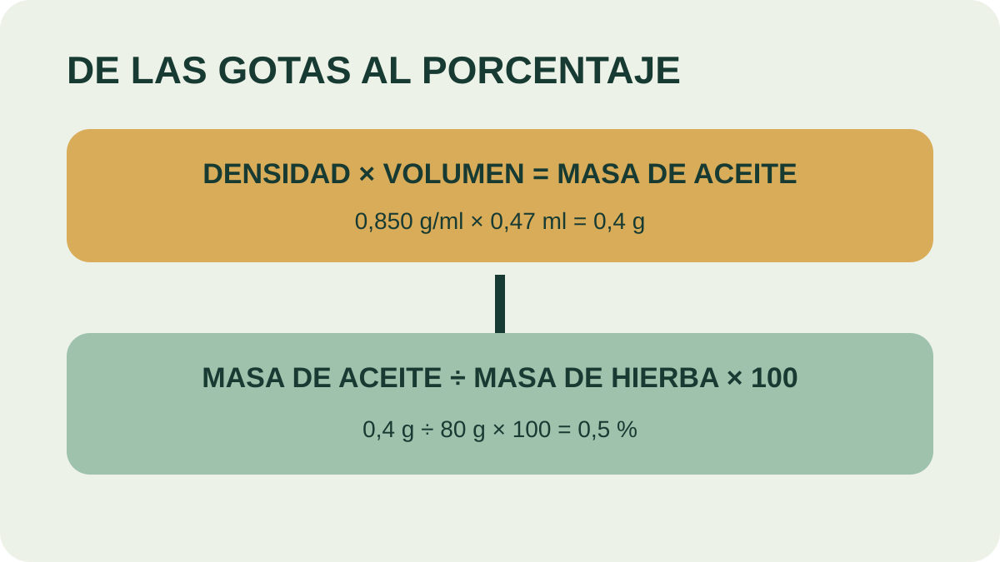

Módulo 19 · 25 minutos
¿Cuánto sale? Calcular el rendimiento
Al terminar, vas a poder calcular el rendimiento porcentual de una destilación y compararlo con valores de referencia.
Menos de medio mililitro
Ochenta gramos de hierba entran al equipo. Al final, el colector muestra apenas 0,47 mililitros de aceite. A simple vista parece poco. Pero ¿es un fracaso, un resultado esperable o un rendimiento excelente? La percepción no alcanza: hace falta una cuenta que permita comparar.
Primero, hablar la misma unidad
La hierba se pesó como masa y el aceite suele leerse como volumen. Para relacionarlos hay que convertir el volumen del aceite en masa mediante su :
densidad del aceite × volumen obtenido = masa de aceite
Si la densidad es 0,850 g/ml y el volumen 0,47 ml, la multiplicación da aproximadamente 0,4 g de aceite esencial. Recién ahora numerador y denominador pueden expresarse en gramos.
De la muestra a cien gramos
El responde: ¿cuántos gramos de aceite producirían cien gramos de esta hierba bajo las mismas condiciones?
La fórmula general es:
rendimiento (%) = masa de aceite ÷ masa de hierba × 100
En el ejemplo, 0,4 g ÷ 80 g × 100 = 0,5 %. También puede pensarse como una proporción: si 80 g de hierba producen 0,4 g de aceite, 100 g producirían 0,5 g.
Un porcentaje necesita contexto
Los valores de referencia dependen de la especie y del estado del material. Poleo oreado: 1,5 %. Orégano fresco: 0,2 %. Romero fresco: 0,6 %, y seco: 0,88 %. Albahaca fresca: 0,6 %, y seca: 1,11 %. Cedrón seco: 1 %. Manzanilla, en flores secas: 0,4 %.
El no equivale exactamente a fresco ni a seco. Registrar el estado evita comparar números que provienen de condiciones distintas.
La tabla deja una pista importante: romero y albahaca muestran un rendimiento mayor en seco que en fresco. No significa que secar cree aceite. Al retirar agua cambia la proporción entre la masa total pesada y la fracción aromática, y el proceso de conservación también condiciona cuánto se recupera.

Seguí las unidades
Marcá dónde aparecen mililitros y dónde gramos. ¿En qué paso desaparecen los mililitros? Repetí la ruta con 1,2 g de aceite obtenidos a partir de 200 g de planta.
Del laboratorio al campo
Los rendimientos industriales, a menudo obtenidos a campo, suelen ser levemente inferiores a los de laboratorio. La escala añade variaciones de carga, transferencia de calor, pérdidas y condiciones menos controladas. Por eso un valor de laboratorio es una referencia, no una promesa productiva.
El porcentaje permite comparar ensayos, registrar mejoras y comenzar a estimar costos. Sin masa inicial, volumen, densidad y estado del material, una cifra aislada dice poco. Con esos datos, cada lote se vuelve trazable y puede compararse con el siguiente.
Actividad · Cerrá la cuenta
Usá estos datos: 150 g de hierba, 0,8 ml de aceite y densidad de 0,90 g/ml. Calculá primero la masa obtenida y luego el rendimiento. Comparalo con la tabla. Después repetí la fórmula con datos propios o inventá un ensayo e indicá especie y estado del material.
La gota ya tiene una historia medible
La planta entró identificada y salió convertida en una fracción aromática cuyo método y rendimiento pueden explicarse. En la próxima parte, la pregunta cambia: qué contiene ese frasco, cómo reconocer su calidad y cómo usarlo con criterio.
Guardá esta estación
Cuando puedas explicar la idea central con tus propias palabras, marcá el módulo como completado.